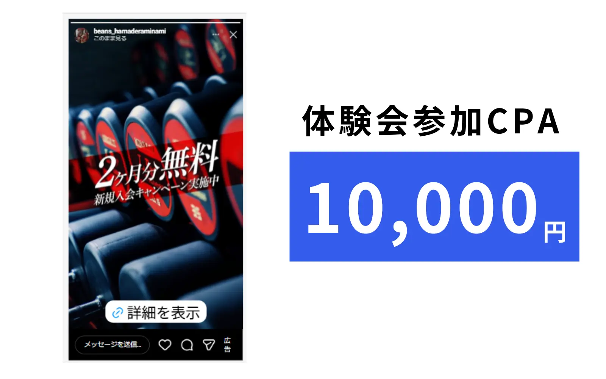

この記事でわかること
- 手数料率だけを比べても総額が分からない理由（最低手数料・初期費用・制作費・内掛けと外掛け）
- 広告費レンジ別に見た、実質の手数料率シミュレーション
- 会社タイプ別の料金と得意領域の比較表（LnXも同じ粒度で掲載）
- 「安さ」が成立している3つの構造と、そのとき何が削られているのか
- 安い会社に乗り換えたときに起きやすいこと
- 外注先を変える以外に、費用を下げる方法
「安い広告運用代行」は、何が安いのか
広告運用代行を探していて「手数料15%」「月額5万円から」といった表記を見ると、同じサービスが安く手に入るように見えます。ですが実際には、単価が安いのではなく、含まれる作業が少ないというケースがほとんどです。
理由は原価構造にあります。運用代行手数料の正体は、運用に関わるメンバーの人件費です。たとえば広告費が月10万円で手数料が20%なら、代理店が受け取るのは月2万円。この2万円の中で「日々の運用」「レポート作成」「報告・コミュニケーション」の3つをすべてまかなうことになり、手数料を極端に安くすれば、このどれかを削るしかありません（出典：【2026年版】リスティング広告 運用代行・代理店の手数料相場は20%？”率より中身”｜スリーカウント株式会社）。
これは安い会社が悪いという話ではありません。削る対象を明示して、その分だけ安くしている会社は誠実です。問題になるのは、何を削っているかを説明しないまま金額だけを下げている場合です。この記事では、その見分け方を金額の分解から順に整理します。
手数料率だけ見ても総額は分からない
見積もりを比較するときに最初にやるべきなのは、金額を次の5つに分解することです。手数料率は、このうちの1つでしかありません。
最低手数料（下限）
多くの会社が最低手数料を設けており、月5万円前後が目安とされています。広告費が小さいと、この下限が効いて実質手数料率が跳ね上がります。「手数料15%」という表記だけを見て安いと判断すると、広告費30万円のときに下限の5万円が適用され、実質は約17%になる、といったことが起こります。
率の表記より先に、下限の金額を聞く
初期費用
アカウント設計、キーワードやオーディエンスの設計、計測タグの設置などにかかる費用で、3〜10万円が一般的とされています。初期費用が無料のプランもありますが、その場合は設計が簡素か、月額に設計工数が含まれていることが多いため、含まれる作業内容で比べる必要があります。
クリエイティブ制作費
別料金になりやすい項目です。バナー制作が1点3〜10万円、動画制作が10〜50万円、LP制作が30〜100万円が目安とされています。広告は配信面だけでなくクリエイティブとLPで成果が大きく変わるため、ここを含めた総額で比較しないと、後から膨らみます。
内掛けか、外掛けか
料率型で見落とされがちな違いです。同じ「予算100万円・手数料20%」でも、100万円の中から手数料が差し引かれる（内掛け）のか、100万円の広告費に手数料20万円が上乗せされる（外掛け＝総額120万円）のかで、実際に媒体へ投じられる金額が20万円変わります。
契約前に必ずどちらかを確認する
媒体が増えたときの扱い
検索広告とディスプレイ広告が1セットの会社もあれば、SNS広告は別手数料という会社もあります。管理画面も入稿規定も異なるため、別々の作業と知識が必要になるからです。将来Meta広告も足す可能性があるなら、その時点でいくら増えるのかを先に聞いておくと、後の判断が速くなります。
料金体系そのものも複数あります。広告費の一定率を払う料率型（15〜20%）、広告費に関わらず月額固定を払う固定報酬型（月10〜50万円）、CV1件あたりや売上の一定割合を払う成果報酬型（BtoBで1件3〜10万円、EC等で売上の5〜15%）、これらを組み合わせたハイブリッド型という4分類が示されています（出典：広告運用代行の費用相場｜手数料20%は妥当？料金体系4タイプと選び方【2026年】｜ローカルマーケティングパートナーズ）。体系が違う見積もりを金額だけで並べると、ほぼ確実に判断を誤ります。
広告費レンジ別・実質手数料率のシミュレーション
「安い」と感じるかどうかは、自社の広告費レンジによって変わります。最低手数料を月5万円、料率を20%と仮定したときの実質負担を並べてみます。
| 月の広告費 | 料率20%での手数料 | 実際に払う手数料 （最低5万円を適用） |
実質の手数料率 | この帯での現実 |
|---|---|---|---|---|
| 10万円 | 2万円 | 5万円 | 約50% | 外注の費用対効果は出にくい |
| 20万円 | 4万円 | 5万円 | 25% | 固定・区分制のほうが総額は安い |
| 30万円 | 6万円 | 6万円 | 20% | 下限を抜け、率がそのまま効き始める |
| 50万円 | 10万円 | 10万円 | 20% | 外注の判断がしやすくなる分岐点 |
| 100万円 | 20万円 | 20万円 | 20% | 率より運用の巧拙が総コストを動かす |
| 300万円 | 60万円 | 60万円 | 20% | 率の交渉余地が出てくる |
ここで分かるのは、広告費が小さいほど「安い会社を探す」意味が大きく、大きくなるほど「率の安さ」より「運用の中身」が効いてくるという構造です。広告費が小さいうちは手数料率型だと最低手数料に届かず割高になることがあり、この帯は固定報酬型のほうが総額を抑えられる場合があるとされています。逆に広告費が大きくなるほど、運用の巧拙が獲得単価に効くため、手数料率が多少高くても成果を出せる代理店を選ぶ価値が上がります（出典：広告運用代行の費用相場｜手数料20%は妥当？料金体系4タイプと選び方【2026年】｜ローカルマーケティングパートナーズ）。

「安さ」を評価するときは、手数料ではなく1件あたりの獲得コストに置き換えてください。手数料を月3万円下げても、獲得単価が3,000円悪化して月30件獲得しているなら、9万円の損です。当社が実務で最初に出してもらうのは、手数料の見積もりではなく、直近3か月のCV数と獲得単価です。これは当社が受発注の両側で見ている進め方です。
会社タイプ別の料金と得意領域
「安い会社」は特定のタイプに偏っています。タイプごとに、安くできる理由と、そのぶん薄くなる部分が違います。当社も同じ粒度で最後の行に載せています。
| タイプ | 支援範囲 | 料金の目安 | 噛み合う広告費規模 | 注意点 |
|---|---|---|---|---|
| 総合大手代理店 | 複数媒体の同時運用、大規模予算の設計、制作体制も社内 | 広告費の15〜20% | 月数百万円以上 | 少額予算だと社内の優先度が下がりやすい |
| 中堅・専門特化の代理店 | 特定媒体・特定業種に絞った運用と改善 | 広告費の20%前後 | 月50万〜500万円 | 得意領域から外れると急に弱くなることがある |
| 区分制（テーブル制）の代理店 | 広告費規模に応じた定額。成果物の範囲を明示して工数を管理 | 広告費帯ごとの固定額 | 月10万〜100万円 | 範囲外の作業はオプション扱いになる |
| フリーランス | 運用の実務。制作や戦略設計は範囲外のことが多い | 広告費の10〜20%または月額固定10〜20万円 | 月10万〜100万円 | 担当が1人のため、繁忙期や離脱時の継続性に限界がある |
| ツール・自動運用型 | 自動入札とテンプレート設定を中心にした運用 | 低めの月額固定 | 月10万〜50万円 | 商材固有の事情を反映しにくく、汎用設定の使い回しになりやすい |
| LnX合同会社 （Web広告運用代行） |
媒体・配信構成・KPIの設計、計測タグ設置、入稿、分析改善、レポーティングまで一気通貫 | 広告出稿金額の20%（出稿金額が50万円未満の場合は10万円／税込） | 月50万〜1,000万円規模 | 最低契約期間は6か月。広告費は別途、クリエイティブ制作費も別途見積もり |
当社の具体的な条件も載せておきます。運用手数料は広告出稿金額の20%で、出稿金額が50万円に満たない場合は10万円（税込）を頂戴しています。広告費は別途、クリエイティブ制作は手数料に含まれず別途お見積りです。最低契約期間は6か月。対応媒体はリスティング広告（Google／Yahoo!）、SNS広告（Meta／TikTok／X／LINE／YouTube）、ディスプレイ広告（GDN／YDN）で、1媒体だけの依頼でも、複数媒体をまたいだ予算配分の設計でも対応します。広告アカウントはお客様名義での運用も可能です。ご相談は無料で、その場で契約はお願いしません。他社の提案書や見積もりを並べた状態でのご相談も歓迎です。
噛み合わない領域も正直に書きます。広告費が月20〜30万円の帯では、当社の最低手数料10万円（税込）が効くため、最低手数料5万円台の会社やフリーランス、区分制を採用している代理店のほうが総額は安くなります。この規模で「とにかく手数料を抑えたい」のであれば、当社は最適な選択肢ではありません。逆に、数千万円規模のブランド広告を多媒体で同時に大きく回す案件は、社内に制作体制を持つ総合大手のほうが噛み合います。
安さが成立する3つの構造
ここが、この記事でいちばん伝えたい部分です。安い会社は魔法を使っているわけではなく、必ずどこかで原価を落としています。その落とし方には大きく3つのパターンがあり、それぞれ削られるものが違います。
①成果物の量を取り決めて絞る型
レポートは月1回まで、訪問での報告は別途費用、広告文の差し替えは月1回まで、除外キーワードの設定は月2回まで——といった形で、提供する成果物の量をあらかじめ決めることで手数料を抑える方式です。実際にこの考え方を明示して手数料を抑えている代理店があります（出典：【2026年版】リスティング広告 運用代行・代理店の手数料相場は20%？”率より中身”｜スリーカウント株式会社）。
この型は、発注側にとって最も納得しやすい安さです。削られているものが契約書に書いてあるからです。自社が週次レポートを実際には読んでいないのであれば、月1回に絞って安くするのは合理的な取引です。確認すべきは、自社が本当に必要としている頻度と、取り決めの内容が合っているかだけです。
②汎用設定の使い回しで工数を落とす型
自動入札のツール任せで運用の手が入らない、複数のクライアントに汎用の設定を使い回す、レポートは数値の羅列だけで改善提案がない——という運用です。工数は抑えられる一方、自社の商材や顧客に合った運用になりにくく、広告費だけが消化されて成果が出ないという指摘があります（出典：広告運用代行の費用相場｜手数料20%は妥当？料金体系4タイプと選び方【2026年】｜ローカルマーケティングパートナーズ）。
この型は、契約書には現れません。見分けるには、直近の検索語句レポートを見せてもらえるかを聞くのが早いです。1年運用しているのに検索クエリが整理されていないアカウントは実際に見かけるとされており、逆に検索語句まで開示する前提で話が進む会社は、手が入っていると考えてよいです。
③人件費の水準が違う型
地方拠点の代理店や、個人で運用しているフリーランスは、都心の代理店に比べて費用の相場が低いことがあります。これは手を抜いているのではなく、単純に固定費の構造が違うためです。フリーランスの手数料は10〜20%または月額固定10〜20万円と柔軟なことが多い一方、担当が1人のため繁忙期の対応や、制作・戦略設計まで含めた依頼には限界が出ることがあります。
3つのうち、避けたほうがよいのは②だけです。①は取引条件として妥当で、③は体制の限界を理解したうえで選べば問題ありません。見積もりを受け取ったら、「これはどの型の安さか」を1つ決めてから判断すると、迷いが減ります。
安さで選んで失敗する典型パターン
実務で見かける失敗は、だいたい次の4つに集約されます。
| パターン | 何が起きるか | 事前に防ぐ質問 |
|---|---|---|
| 運用が事実上の放置になる | 配信は続くが、検索語句の整理も入札の調整も行われない | 「直近3か月の検索語句レポートを見せてもらえますか」 |
| レポートが数字の羅列で終わる | 成果の良し悪しが判断できず、社内で説明できない | 「レポートに所感と次月の打ち手は付きますか」 |
| 担当者の属人化 | 退職や繁忙期に運用品質が落ち、引き継ぎで空白が出る | 「1社あたり何名体制で、担当は何社を掛け持ちしますか」 |
| アカウントが代理店名義のまま | 解約時に運用データとノウハウが自社に残らない | 「アカウントを自社名義で保有・開示してもらえますか」 |
とくに最後の1つは、金額の話より優先度が高いと考えています。手数料が安くても、解約時にアカウントを持ち出せなければ、次の会社はゼロから作り直すことになり、その分の広告費と時間が丸ごと失われます。安さの比較に入る前に、この1点だけは先に確認してください。

この案件のように、同じ広告費でも構成の組み方で受注の質が変わることがあります。手数料の差額よりも、こうした設計変更のほうが事業へのインパクトは大きくなりやすいというのが、当社が実務で見ている感覚です。
外注先を変えずに費用を下げる方法
「安い会社に乗り換える」は、費用を下げる手段のひとつでしかありません。乗り換えには移行コストがかかるため、まず他の手を検討したほうが得なことがあります。
成果物の量を見直す
実際には読んでいないレポートを週次で依頼していないでしょうか。報告の頻度や訪問の有無を見直すだけで、同じ会社のまま手数料を調整できる場合があります。代理店側の視点では、レポート制作の頻度がそのまま工数と手数料に反映されます。
媒体を絞る
媒体は多いほど費用が積み上がります。自社の顧客がいる媒体を見極めて主軸を決めるだけで、運用工数もクリエイティブ制作費も下がります。複数媒体を同時に回すのは、1媒体で獲得単価が安定してからでも遅くありません。
クリエイティブの素材を自社で用意する
制作費は別料金になりやすい項目です。写真素材や商品説明、顧客の声といった一次情報を自社で用意できれば、制作の工数が下がります。これは費用の話だけでなく、外部からは作れない訴求材料が入るという意味でも効きます。
インハウス化を検討する
毎月500〜1,000万円以上を広告費として使う規模であれば、教育から始めるケースでも社内で運用体制を構築したほうが、費用全体では割安になるという見方があります（出典：【2026年版】リスティング広告 運用代行・代理店の手数料相場は20%？”率より中身”｜スリーカウント株式会社）。ただし専門人材の採用と育成が前提になるため、この規模に届いていない段階では現実的ではありません。
乗り換えは、手数料の差額だけで判断しないでください。アカウントの引き継ぎや再設計で一時的に成果が落ちやすく、その間の広告費は先行投資になります。差額が月3万円で、立ち上げ直しに1〜2か月かかるなら、回収までに数か月かかる計算です。乗り換えるなら、手数料ではなく「今のままでは改善が止まっている」という理由で判断するほうが、結果的に納得できます。
発注前チェックリスト
「安い」を総額で判断するためのチェックリスト
【金額の分解】
- 手数料率とあわせて、最低手数料の金額を確認した
- 初期費用の有無と、含まれる作業内容を確認した
- バナー・動画・LPの制作費が別料金かどうかを確認した
- 内掛けか外掛けかを確認した
- 媒体を追加した場合にいくら増えるかを確認した
【中身の確認】
- 日々の入札調整・検索語句の整理・レポート・報告のどれが含まれるか聞いた
- 除外キーワードの設定頻度、広告文の差し替え頻度を確認した
- レポートに所感と次月の打ち手が付くかを確認した
- 1社あたりの運用体制（人数・掛け持ち数）を聞いた
【契約と資産】
- 広告アカウントを自社名義で保有・開示してもらえるか確認した
- 最低契約期間と、途中解約時の扱いを確認した
- 計測環境（CV計測タグ・GA4連携）の構築が範囲に入るか確認した
【判断の基準】
- 直近3か月のCV数と獲得単価を、社内で把握している
- 許容できる獲得単価（CPA）を先に決めている
- 手数料の差額ではなく、獲得単価の変化で比較する前提になっている
なお、契約書の条項そのものの解釈、とくに途中解約時の扱いやアカウントの帰属に関する個別の判断については、弁護士等の専門家にご確認ください。ここで挙げているのは、あくまで発注前に確認しておくと後で困らない実務上の観点です。
LnXの見解
「広告運用代行 安い」で探している方の相談を受けるとき、最初に聞くのは予算ではなく、いま1件の問い合わせにいくらかかっているかです。ここが分かっていないと、手数料を3万円下げるべきなのか、獲得単価を1,000円下げるべきなのかが決まりません。そして多くの場合、効くのは後者です。
もうひとつ、安さを探す段階で見落とされやすいのが、広告費の規模と依頼先の相性です。月20万円の広告費に対して月10万円の手数料を払う構造は、どう運用してもリターンが出にくい。この帯であれば、外注先を探すより、まず広告費を50万円まで積める商材かどうかを先に検討したほうが、判断として健全です。当社もこの規模のご相談では、正直にそうお伝えしています。
そのうえで、月50万円を超えてくると、率の差より運用の中身が総コストを動かします。LnXでは、媒体・配信構成・KPIの設計から計測タグの設置、入稿、分析改善、レポーティングまでを一つの流れで担当しています。いまの代理店の手数料が高いのか安いのか判断がつかないという段階でも、既存アカウントを拝見して、活かせる資産と作り直すべき箇所を切り分けたうえでお伝えできます。ご相談は無料で、その場で契約はお願いしていません。
よくある質問
Q 広告運用代行の手数料の最低ラインはいくらくらいですか？
最低手数料は月5万円前後を設定している会社が多いとされています。これを下回る提示が出てきた場合は、安いというより含まれる作業が絞られていると考えたほうが実態に近いです。手数料は運用担当者の人件費にあたるため、金額が下がれば日々の調整・レポート・報告のどれかを削るしかない構造になっています。
Q 「内掛け」と「外掛け」はどう違いますか？
同じ予算100万円・手数料20%でも、100万円の中から手数料が差し引かれるのが内掛け、100万円の広告費に手数料20万円が上乗せされて総額120万円になるのが外掛けです。実際に媒体へ投じられる金額が20万円変わるため、見積もりを比べるときは必ずどちらかを確認してください。
Q 広告費が月20万円くらいでも依頼できますか？
依頼先は限られますが可能です。ただし最低手数料の下限が効くため、実質の手数料率は20%を大きく超えます。この帯では、最低手数料を低く設定している中小代理店やフリーランス、あるいは広告費規模に応じた区分制を採用している会社のほうが総額は抑えられます。当社の料金体系では、この規模はあまり噛み合いません。
Q 手数料が安い会社に乗り換えれば費用は下がりますか？
手数料は下がりますが、総支出が下がるとは限りません。乗り換え時はアカウントの引き継ぎや再設計で一時的に成果が落ちやすく、その間の広告費は先行投資になります。手数料の差額が月数万円で、乗り換えによる立ち上げ直しが1〜2か月続くなら、差額を回収できないこともあります。
Q 費用を抑えるには、外注先を変える以外に方法はありますか？
あります。代表的なのは、成果物の量を絞ることです。レポートを月1回にする、訪問報告を減らす、広告文の差し替え頻度を決めるといった取り決めで、同じ会社のまま手数料を調整できる場合があります。もうひとつは媒体を絞ることです。複数媒体を同時に回すと工数が積み上がるため、主軸を1つに決めるだけで費用は変わります。
Q 安い会社かどうかを判断するとき、最初に聞くべきことは何ですか？
「その手数料に何が含まれているか」です。日々の入札調整、検索語句の確認と除外、レポート作成、報告の場。この4つのうちどれが入っていてどの頻度なのかを聞くと、同じ金額でも中身の差が見えます。あわせて、広告アカウントを自社名義で保有できるかも確認してください。解約時にデータとノウハウが残るかが変わります。